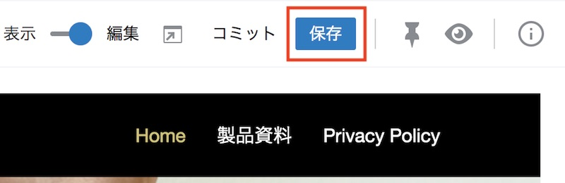
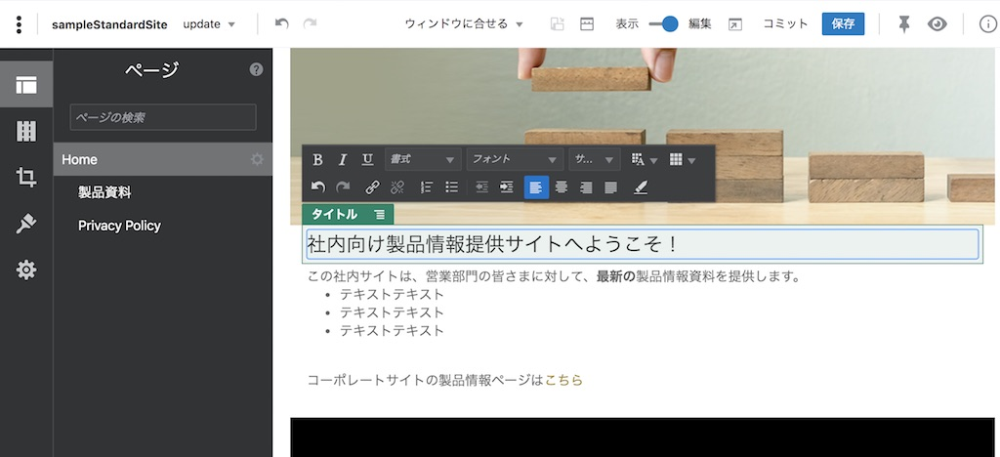
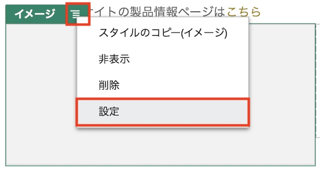
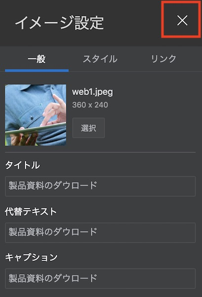
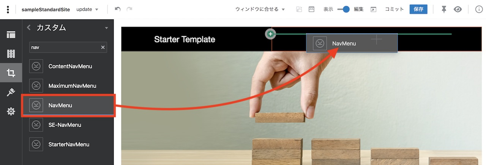
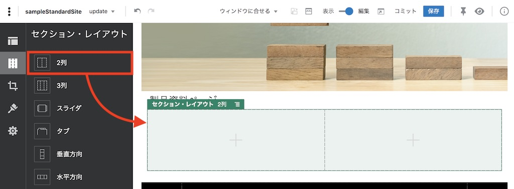
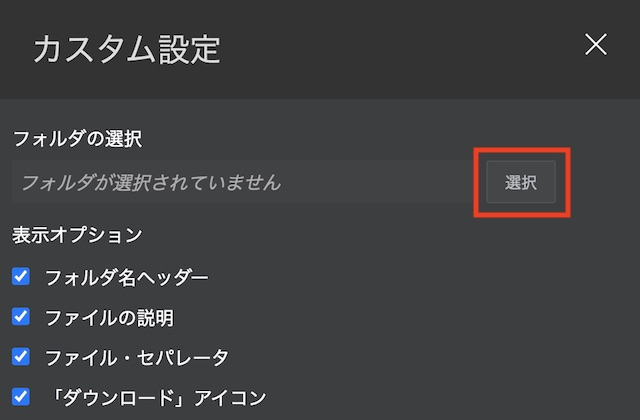
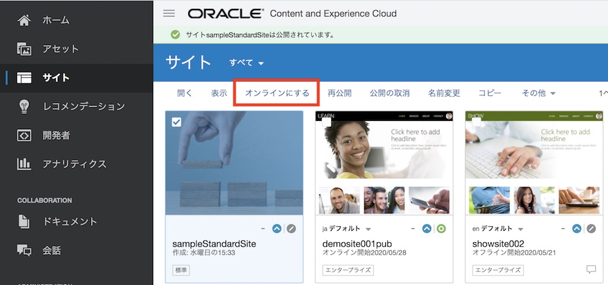

OCE のサイト作成機能を利用し、Web サイト（スタンダードサイト）を作成・公開する方法をステップ・バイ・ステップで紹介するチュートリアルです。ここでは、Web サイトの作成〜編集〜公開までの基本的な手順をハンズオン形式で習得します。
さらに、フォルダに登録される複数ドキュメントをWebページからダウンロードできる「資料ダウンロード」ページの作成方法も、あわせて習得します
この文書は、2020年6月時点での最新バージョン(20.2.3)を元に作成されてます
前提条件
- Oracle Content and Experience インスタンスを作成する
-
OCE の利用ユーザーに OCE インスタンスの CECStandardUser もしくは CECEnterpriseUser アプリケーション・ロールが付与されていること
[Memo]
ユーザーの作成とアプリケーションロールの付与手順は、Oracle Content and Experience インスタンスの利用ユーザーを作成する をご確認ください。
0. はじめに
OCE のサイト機能は、Web や HTML などの技術に詳しくないビジネスユーザーが、ドラッグ&ドロップなどの直感的な操作で Web サイトを作成し、公開することができます。また、OCEは、レスポンシブ Web デザイン（Bootstrap）に対応した事前定義済のテンプレート（ひな型）を複数パターン提供します。これらを利用することで、パソコンやスマートフォン/タブレットに対応した Web サイトを、すばやく、簡単に、低コストで作成・公開できます
また、OCE が提供する ファイル共有機能 や アセット機能 とシームレスな機能統合がされているため、ドラッグ&ドロップなどのとても簡単な操作で、ドキュメントやアセットを Web サイト上に掲載し、公開することができます
OCE は、以下の2種類のサイトを作成・公開できます。サイト作成時に選択することができます（※サイト・ガバナンス機能が無効化されている場合のみ）
- スタンダード（標準）サイト
- OCE のドキュメントや会話で管理するファイル、フォルダ、会話をWebサイト上に掲載できるサイト
- 利用例: ランディングページ、イベントサイト、サービスサイト、社内サイト（資料の共有・ダウンロード） など
- エンタープライズサイト
- スタンダードサイトで利用できるファイル、フォルダ、会話に加えて、アセット・リポジトリで管理するデジタル・アセットやコンテンツ・アイテムも掲載できるサイト
- 利用例: 企業サイト、製品・サービスの情報提供サイト、ニュースサイト、ブログサイト など
- エンタープライズサイトの作成方法は、こちらのチュートリアルで紹介
1. サイトの作成
サイトを作成します。
今回は、社内の営業部門に所属する営業および技術者を対象とした 社内向け製品情報提供サイト を、OCE の スタンダードサイト で作成します。サイトの作成イメージは以下の通りです
-
ホームページ

-
製品資料ページ

[Memo]
スタンダードサイトを作成するには、ユーザーに CECStandardUser もしくは CECEnterpriseUser ロールの付与が必要です。サイトガバナンスが有効化されている場合、管理者がテンプレートを公開しないなぎり、サイトメニューからサイトを作成できません。代替え手段として「開発者」→「テンプレート」より、テンプレートを選択し「サイトの作成」を実行することができます
1.1 新規サイトの作成
-
OCE にサインインします
-
左ナビゲーションの 「サイト」 をクリックします
-
「作成」 をクリックします

-
テンプレートを選択します。ここでは、StarterTemplate を選択します

[TIPS]
テンプレート選択時に StarterTemplate が表示されない場合、OCE インスタンスのサービス管理者に連絡し、デフォルト・サイト・テンプレートのインストールとテンプレートへのメンバー追加（アクセス権限の設定）を依頼してください -
タイプで 「標準」 を選択し、「次」 をクリックします

- 以下を入力し、「終了」 をクリックします
- 名前: sampleStandardSite
-
説明: （任意）

[Memo]
名前は、サイトにアクセスするURL（サイトURL）として利用されます。利用できるのは、アルファベット、数字、アンダースコア( _ )、ハイフン( - ) です。スペース( )を入力した場合は、自動的にハイフン( - )に置換されます
-
サイトが作成されます

1.2 サイト・セキュリティの設定
サイト・セキュリティを設定し、サイトの公開範囲を設定します。サイトの公開範囲には、以下2パターンがあります
- パブリック
- 誰でも参照可能な Web サイト（公開範囲の制限なし）
- セキュア
- ユーザーIDおよびパスワードにより認証され、かつアクセス権限を持つユーザーのみが参照できるWebサイト（公開範囲の制限あり）
- アクセスできるユーザーは、「クラウド・ユーザー」「訪問者」「サービス・ユーザー」「特定のユーザー」より選択
今回作成するサイトは社内向けの製品情報提供サイトなので、サイト・セキュリティは 「セキュア」 を、アクセスできるユーザーは 「クラウド・ユーザー」 をそれぞれ設定します
-
sampleStandardSite を選択し、右クリック→ 「プロパティ」 をクリックします

-
「サイト・セキュリティ」 タブをクリックします
-
「このサイトにアクセスするすべての人にサインインを要求します」で、「はい」 を選択します
-
「オンラインのときにこのサイトにアクセスできるユーザー」で 「クラウド・ユーザー」 が選択されていることを確認し、「保存」 をクリックします

[Memo]
「クラウド・ユーザー」とは、OCE インスタンスが利用する IDCS にユーザー・アカウントを持つすべての IDCS ユーザーを意味します（OCE インスタンスへのアクセス権の有無は関係ありません）。その他のサイト・セキュリティは、下記ドキュメントをご確認ください
2. サイトの編集
サイトを編集します。今回は、下記のようなページ構成のサイトを作成します
ホーム
|
+--製品資料（製品資料のダウンロードページ：新規作成）
|
+--Private Policy（既存ページのまま）
2.1 サイト編集画面の起動
-
sampleStandardSite を選択し、「開く」 をクリックします

-
サイトの編集画面（Site Builder）が表示されます。「ベース・サイト▼」 をクリックし、「新規更新の作成」 を選択します

-
「新規更新の名前の指定」に update と入力し、「OK」 をクリックします

-
「update」に切り替わっていることを確認します。表示側にあるスイッチを 「編集」 モードに切り替えます

-
サイトが編集モードに切り替わります。編集側にあるスイッチを 「表示」 モードに切り替えます。サイトの表示モードに戻ります

-
サイト編集のプロセスは、次の通りです。

- 新規更新の作成: ベースサイトのコピーが「更新」として作成されます。「更新」は複数作成できます
- サイトの編集: ベースサイトからコピーされた「更新」を編集します
- サイトの保存: ベースサイトからコピーされた「更新」の編集内容を保存します（「更新」の上書き保存）
- サイトのコミット: ベースサイトからコピーし、編集された更新を、ベースサイトにコピー（上書き保存）します
2.2 サイトのページ構成の編集
-
サイトを 「編集」 モードに切り替えます
-
左サイドバーの 「ページ」 をクリックします
-
「Home」 が選択されていることを確認し、「ページの追加」 をクリックします

- 以下の通りに入力し、「閉じる」 をクリックします
- ページ・タイプ: Webページ
- ページ名: 製品資料
- ページURL: product
- オーバーライド: 選択する
- ページ・レイアウト: index.html を選択
-
モバイル・ページ・レイアウト: 「デスクトップと同じ」 を選択

-
「製品資料」 ページを、Home ページと Developing Template の間にドラッグ&ドロップで移動します

-
今回のチュートリアルで利用しないページ（Developing Templates、Detail Page）を削除します。
-
Developing Template をクリックします
-
「ゴミ箱」 アイコンをクリックします。続けて 「OK」 をクリックします

-
同じ手順で、Detail Page も削除します
-
-
最終的には、以下のページ構成となります。サイト上のナビゲーションメニューもページ構成の通りに表示されます

-
「保存」 をクリックします

2.3 Home ページの編集
-
Home ページをクリックします
-
ページ上に「タイトル」コンポーネントと「段落」コンポーネントが配置され、それぞれにサンプルのテキストが入力されています。サンプルテキストを削除し、適切な文言に変更します。以下は変更例です
- タイトル: 社内向け製品情報提供サイトへようこそ！
-
段落: この社内サイトは、営業部門の皆さまに対して、最新の製品情報を提供します…（以降省略）

[Memo]
タイトルも段落も WYSIWYG エディタで編集でき、文字の装飾やスタイルの変更、URLの挿入、画像や表の挿入などが可能です。それぞれのコンポーネントの利用方法は、下記ドキュメントもあわせてご確認ください
-
左サイドバーの 「セクション・レイアウト」 をクリックします
-
段落コンポーネントの下にセクション・レイアウトの 「2列」 を、ドラッグ&ドロップで配置します

[Memo]
セクション・レイアウトは、コンポーネントの配置を自動的に調整します。「2列」以外にも、「3列」「スライダ」「タブ」などのパターンが提供されています。詳細は、下記ドキュメントのSection Layout を合わせてご確認ください -
配置したセクション・レイアウト「2列」の メニュー をクリックし、「設定」 をクリックします

-
「カスタム設定」 をクリックします

- 以下の通りに入力し、「< 戻る」 をクリックします
- 最初の列の幅(%): 50
- 2番目の列の幅(%): 50
- レスポンシブ・ブレーク・ポイント: 768
-
レスポンシブ動作: 2番目の列を最初の列の下に移動

-
右上の 「 X 」 をクリックし、設定画面を閉じます
-
セクション・レイアウトの 「最初の列」 にコンポーネントを配置します。
-
左サイドバーの 「コンポーネント」→「シード」 をクリックします

-
「イメージ」 コンポーネントを、セクション・レイアウトの 「最初の列」 にドラッグ＆ドロップします

-
「最初の列」に配置した「イメージ」コンポーネントの下に 「タイトル」 コンポーネントをドラッグ＆ドロップします。その下に 「段落」 コンポーネントを、さらにその下に 「ボタン」 コンポーネント配置します

-
「イメージ」 コンポーネントをクリックします
-
メニュー をクリックし、「設定」 をクリックします

-
「選択」 をクリックします

-
ドキュメント・フォルダが開きます。フォルダから任意の画像を選択し、「OK」 をクリックします

[TIPS]
フォルダに必要な画像がない場合、この画面上の 「アップロード」 をクリックし、ローカル環境の画像ファイルをフォルダにアップロードし、それを選択することができます -
「タイトル」「代替テキスト」「キャプション」 に 「製品資料のダウンロード」 と入力します
-
右上の 「 X 」 をクリックし、イメージ設定を閉じます

[Memo]
イメージコンポーネントは、画像をページ上に配置する場合に利用します。スタンダードサイトの場合、ドキュメント・フォルダから画像を選択します。下記ドキュメントも合わせてご確認ください -
「タイトル」 コンポーネントをクリックし、「製品資料のダウンロード」 と入力します
-
「段落」 コンポーネントをクリックし、任意のテキストを入力します

-
「ボタン」 コンポーネントをクリックし、メニュー→「設定」 選択します
-
「ラベル」と「タイトル」に 「製品資料ページへ」 と入力します。さらに、「位置合わせ」で 「中央」 を選択します
-
「リンク」 タブをクリックします

-
「リンク・タイプの選択」から 「サイト・ページ」 を選択します。続けて「ページ」より 「製品資料」 を選択します
-
右上の 「 X 」 をクリックし、ボタン設定を閉じます

[Memo]
「ボタン」コンポーネントは、サイト・ページのリンクだけでなく、外部 Web サイトへのリンクや、ファイルのダウンロードやプレビューなども指定できます。詳しい利用方法は、下記ドキュメントを合わせてご確認ください
-
-
同じ手順を繰り返し、「セクション・レイアウト」の 「第2列」 に Privacy Policy ページの紹介とリンクを作成します。作成イメージは以下の通りです

- 「保存」 をクリックします。以上で、Home ページの編集は終了です
2.4 製品資料ページの編集
2.4.1 フォルダに製品資料を登録する
-
左ナビゲーションより 「ドキュメント」 をクリックします。「作成」 をクリックし、「サイト作成チュートリアル」 フォルダを作成します

-
「サイト作成チュートリアル」フォルダの下に、「製品カテゴリA」 と 「製品カテゴリB」 のフォルダを作成します

-
「製品カテゴリA」と「製品カテゴリB」のフォルダに、Web サイト上に掲載する資料をアップロードします。ここでは、それぞれのフォルダに、2つのPowerPoint資料をアップロードしてあります

2.4.2 製品ページの編集
-
サイト編集画面を開き、「製品資料」 ページを編集モードで開きます。ページには、ロゴもナビゲーションもありません

[Memo]
ページ上の真ん中に「＋」がある点線の長方形は「スロット」です。サイト作成者は、スロットの領域内にコンポーネントを配置し、ページを編集します。なお、スロットは、テンプレートの開発時に、開発者が定義します -
ページの左上の logocontainer スロットに、コンポーネント→シード→「タイトル」 コンポーネントを配置します

-
タイトルコンポーネントに 「Starter Template」 と入力し、文字の色を 白(White) にします

-
サイトナビゲーションを表示するためのカスタムコンポーネントを配置します。左サイドバーの 「シード」 をクリックし、「カスタム」 を選択します

-
ページ右上の navMenu スロットに、「NavMenu」 コンポーネントを配置します。この際、コンポーネントの検索ボックスに
navと入力すると、NavMenu コンポーネントが見つけやすくなります
-
サイトナビゲーションが表示されます

-
slot-content スロットに、コンポーネントを配置します
-
左サイドバーの「カスタム」を 「シード」 に切り替えます
-
ページ中央の slot-content スロットに 「タイトル」 コンポーネントを 配置し、「製品資料ページ」 と入力します

-
「セクション・レイアウト」 より 「2列」 を、「タイトル」コンポーネントの下に配置します

-
「2列」のメニュー→ 「設定」→「カスタム設定」 を開き、以下の通りの設定します
- 最初の列の幅(%): 50
- 2番目の列の幅(%): 50
- レスポンシブ・ブレーク・ポイント: 768
-
レスポンシブ動作: 2番目の列を最初の列の下に移動

-
「2列」の設定メニューを閉じます
-
「セクション・レイアウト」の「最初の列」に 「タイトル」 コンポーネントを配置し、「製品カテゴリA」 と入力します

-
タイトルコンポーネントの設定メニュー→ 「設定」→「スタイル」 を選択します
-
「カスタマイズ」 を選択し、背景色とフォントの色を、それぞれ以下の通りに変更します

-
「タイトル」コンポーネントの設定メニューを閉じます。背景色と文字の色が変更されていることを確認します
-
「最初の列」の「タイトル」コンポーネントの下に 「ファイル・リスト」 コンポーネントを配置します

[Memo]
ファイル・リストコンポーネントは、選択したフォルダに保管されるファイルを一覧表示します。フォルダ・リストコンポーネントと組み合わせて利用することで、複数フォルダに含まれるファイル一覧を表示できます。詳細は、下記ドキュメントをあわせてご確認ください -
「ファイル・リスト」の設定メニュー→ 「設定」→「カスタム設定」 をクリックします

-
「選択」 をクリックします

-
フォルダの選択画面が表示されます。前の手順で作成した 「製品カテゴリA」 を選択し、「OK」 をクリックします

-
フォルダ権限の選択で 「サイト・ビジターのアクセス：ダウンロード実行者」 を選択します
-
表示オプション を以下の通りに選択します

-
「カスタム設定」を閉じます。続けて、「ファイル・リストの設定」を閉じます
-
表示モードに切り替えます
-
「製品カテゴリA」フォルダ内の資料が一覧表示されます。ダウンロード・アイコンをクリックすると、資料がダウンロードされることを確認します

-
-
編集モード に切り替えます。
-
同じ手順を繰り返し、セクション・レイアウトの 「第2列」 を編集します。今回は 「ファイル・リスト」 コンポーネントで 「製品カテゴリB」 フォルダを選択します

-
表示モードに切り替えます。それぞれのフォルダに格納された資料のダウンロードできることを確認します
-
編集内容を 「保存」 します
2.5 編集内容のコミット
-
「コミット」 をクリックします

-
確認のダイアログを確認し、「コミット」 をクリックします
-
編集内容がベース・サイトに上書き保存されます
-
サイト編集画面を閉じます
3. サイトの公開
3.1 サイトの公開とオンライン化
作成したサイトを公開します。
-
左ナビゲーションより 「サイト」 をクリックします。sampleStandardSite を選択し、「公開」 をクリックします

-
サイトが公開されるのを確認し、「オンラインにする」 をクリックします

-
確認のダイアログが表示されます。「確認して続行」 にチェックを入れ、「オンラインにする」 をクリックします
-
サイトがオンライン状態に遷移し、サイトへのアクセスが可能になります

3.2 サイトの確認
公開（オンライン化）されたサイトにアクセスし、動作を確認します
-
公開したサイト（ここでは sampleStandardSite）を選択し、「プロパティ」 をクリックします

-
「サイトURL」 をコピーします

-
別ブラウザを開き、先ほどコピーしたサイトURLを開きます。
-
ユーザーIDとパスワードを入力するサイン・イン画面 が表示されます。ID/パスワードを入力し、サイン・インをクリックすると、サイトが表示されます

-
ブラウザの横幅を小さくすると、それに合わせてWebサイトの表示も変更されます（レスポンシブWebデザイン）。また、Home ページや製品情報ページでは、「2列」のセクション・レイアウトが縦表示（最初の列の下に2列目が表示）に切り替わることも確認します

3.3 フォルダに資料を追加する
ファイル・リストで作成した資料ダウンロードは、選択したフォルダのドキュメントをリアルタイムで参照します。そのため、フォルダにドキュメントを1件追加すると、Web サイト上の製品資料ページもドキュメントが1件追加されます。また、フォルダからドキュメントを削除すると、Web サイト上の製品資料ページからも削除されます
-
OCE のドキュメントを開き、「サイト作成チュートリアル」→ 「製品カテゴリA」 フォルダを開きます
-
新規ドキュメントを1件アップロードします（ここでは、サンプル資料A-3.pptx を追加）

-
3.2 項で開いた sampleStandardSite サイトをリロードします。製品カテゴリAに資料が1件追加されていることを確認します

以上でこのチュートリアルは終了です。